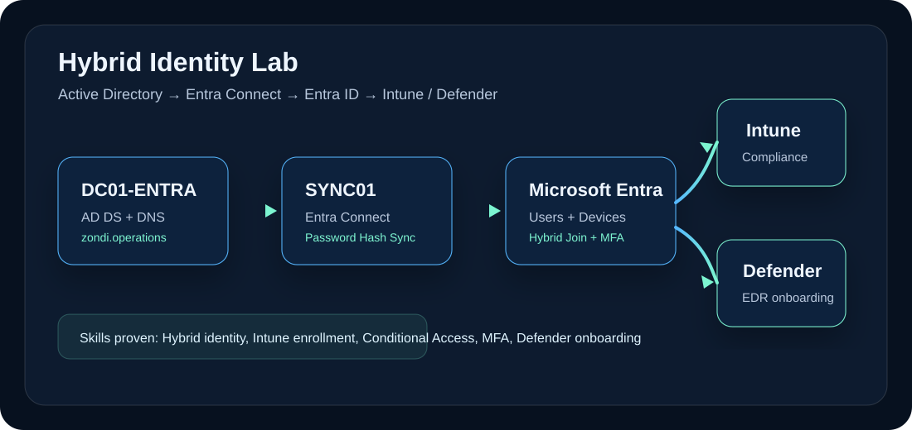

Hybrid Identity Lab
Active Directory, Entra Connect, Hybrid Microsoft Entra Join, Intune enrollment, Conditional Access, MFA and Defender onboarding.

Project overview
This lab was built to understand how on-premises Active Directory connects with Microsoft Entra ID and how Windows devices move from domain join into hybrid Microsoft Entra Join and Intune management.
Portfolio value: This project proves practical identity, endpoint and Microsoft cloud administration understanding beyond normal helpdesk exposure.
Environment
- Domain: zondi.operations
- DC01-ENTRA: Active Directory Domain Services and DNS
- SYNC01: Microsoft Entra Connect server
- CL01-ENTRA: Windows client device
- Identity sync: Password Hash Sync
- Management: Microsoft Intune and Defender for Endpoint
What I configured
- Built a Windows Server domain controller and configured the lab domain.
- Joined a Windows client device to the domain.
- Installed and configured Microsoft Entra Connect with Password Hash Sync.
- Synced selected users from Active Directory to Microsoft Entra ID.
- Configured Hybrid Microsoft Entra Join through policy and verified device state.
- Enabled Intune MDM enrollment and assigned compliance policy.
- Tested Conditional Access and MFA behaviour.
- Onboarded the endpoint to Defender for Endpoint.
Troubleshooting notes
Important checks included verifying DNS configuration, OU sync scope, Entra Connect sync status, device registration status, MDM scope, compliance assignment and device check-in status.
Skills demonstrated
Next improvements
- Add more realistic user groups and dynamic device groups.
- Document a break/fix scenario for Hybrid Microsoft Entra Join failure.
- Add screenshots from Entra, Intune, dsregcmd and Defender portals.